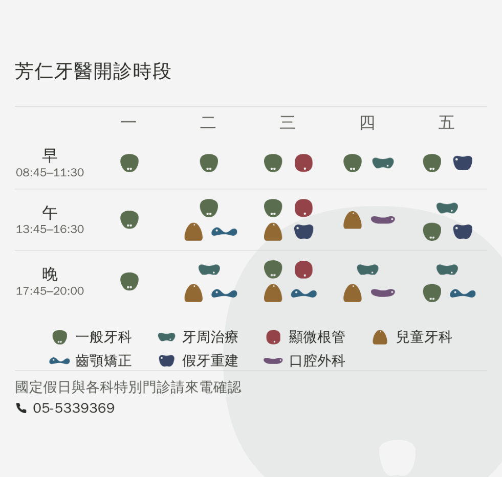
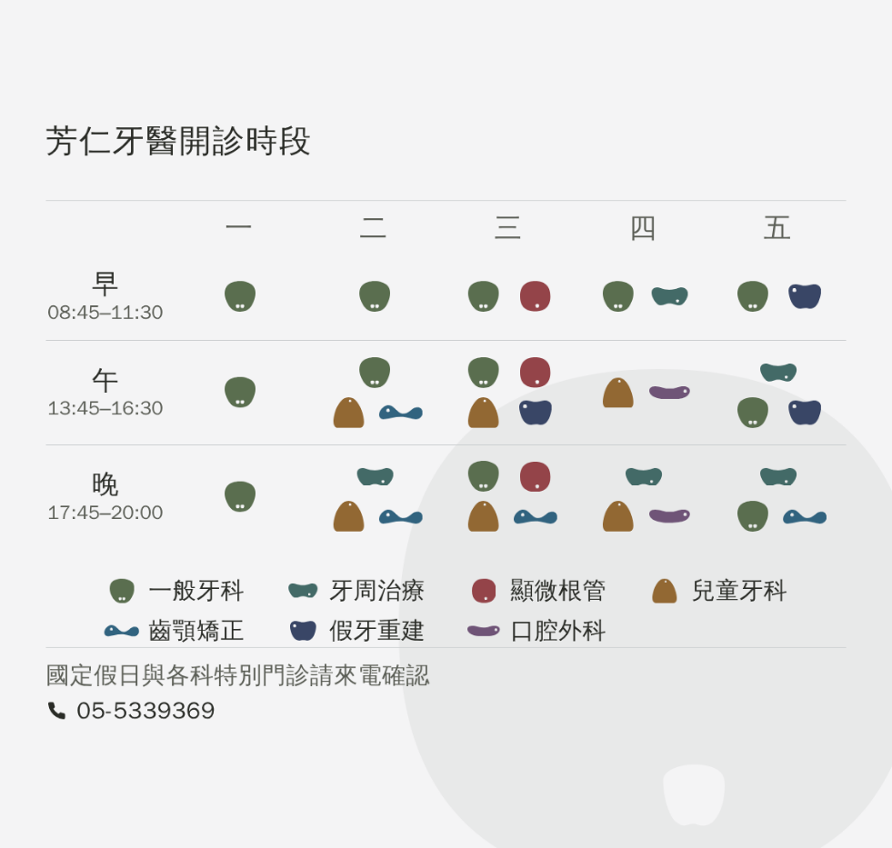
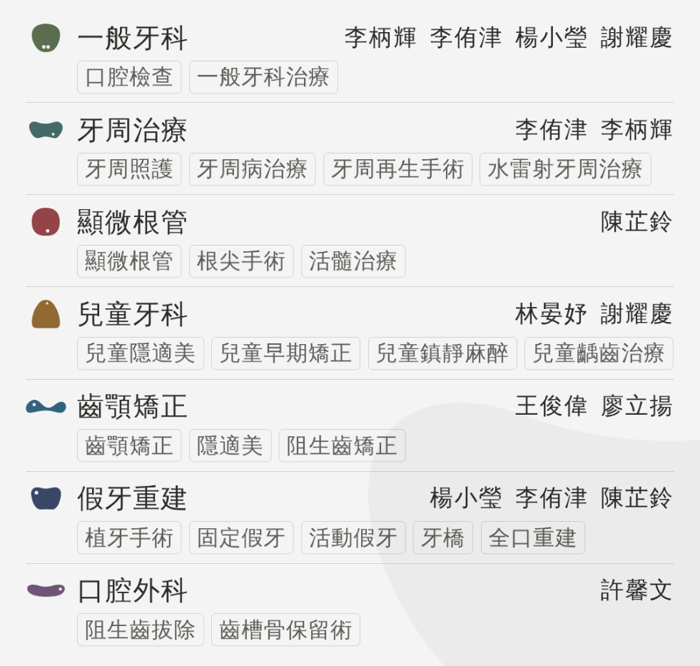
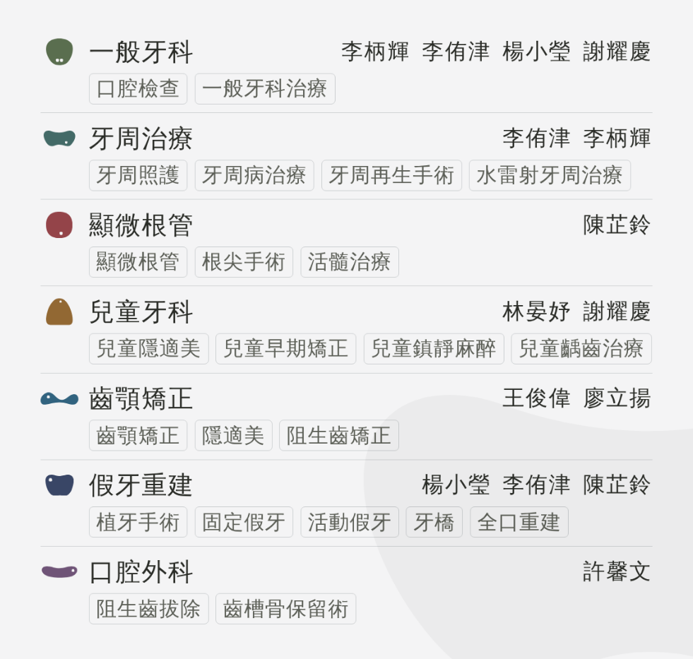
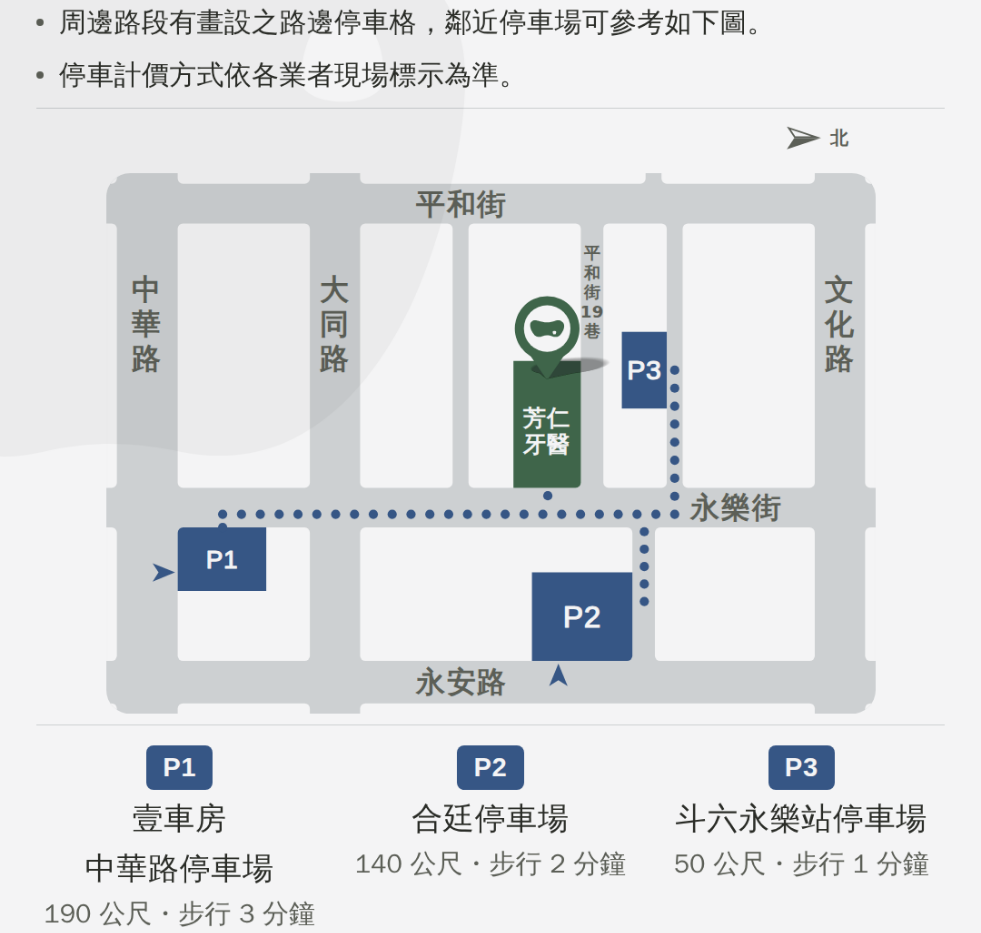
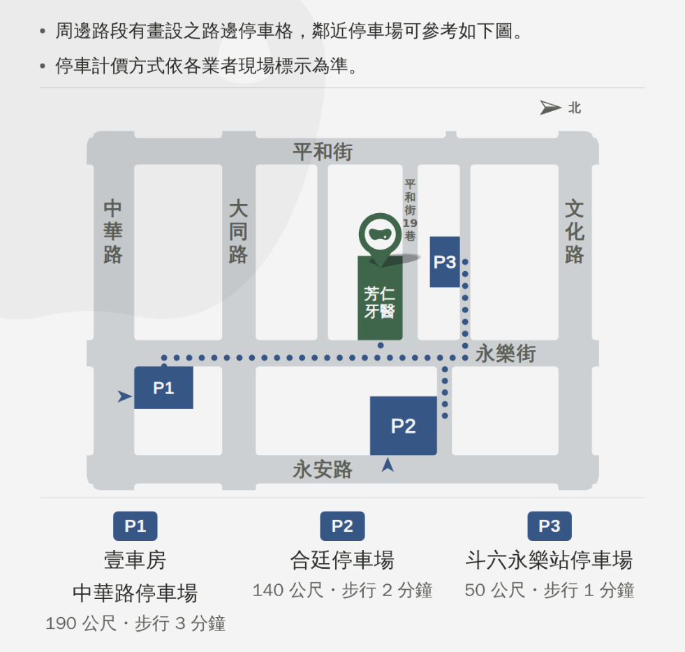
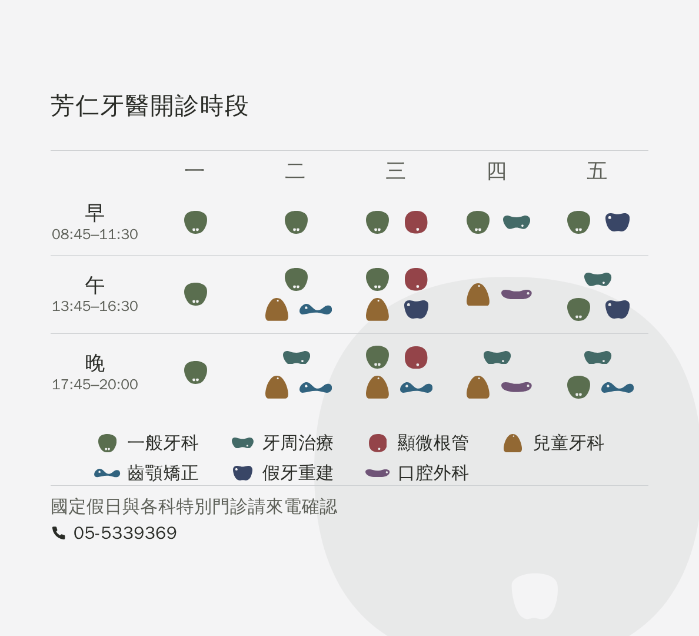
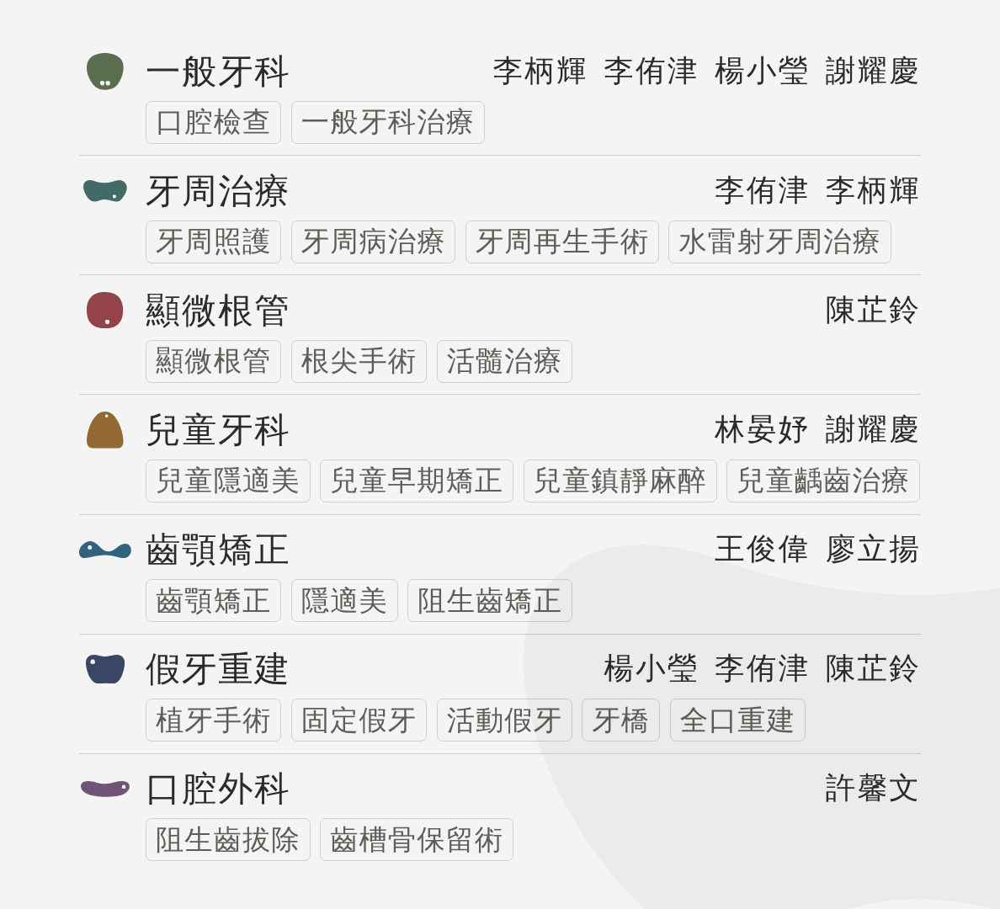
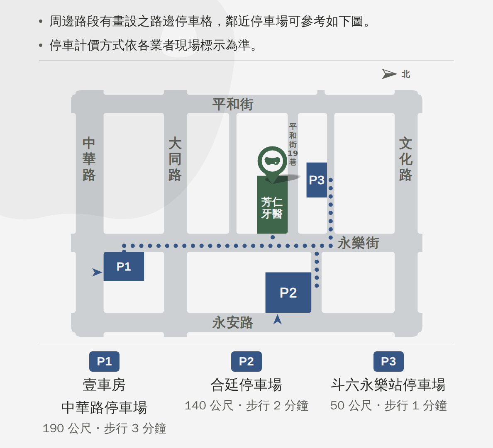

2026-09-13。內容一個像素都沒有動 —— 只做了兩件事：左右各補 54px（上下就不會被裁）， 以及浮水印換回「一張一顆」那一版。
三張截圖裡那個輪播框都是 981×933 裝置 px（1.0514:1），
而我們的圖是 1080 見方 —— 它照寬度放大，所以上下各裁掉 26.4 個原圖像素。
⚠ 三張量到的上下界完全一樣（579–1511），所以那不是某一張的巧合。
| 貼文 | 內容離上/下邊 | 現況被裁掉 | 現況裁完還剩 | 補邊之後 |
|---|---|---|---|---|
| 門診表 | 159 / 164 | 26.4 / 26.4 | 132.6 / 137.6 | 159 / 164 （上下不裁） |
| 科別與醫師 | 63 / 57 | 26.4 / 26.4 | 36.6 / 30.6 | 63 / 57 （上下不裁） |
| 位置與周邊停車 | 36 / 33 | 26.4 / 26.4 | 9.6 / 6.6 ⚠ | 36 / 33 （上下不裁） |
⭐ 一個像素的墨都沒有被裁掉 —— 地圖那張是「貼邊」不是「缺角」，
你看到的是留白被吃光。
⚠⚠ 而且那 26.4 幾乎正好等於地圖那張自己的頁面內距
（你 09-08 挑的 Ⓜ3 ＝ 26px）—— 那是巧合，但它說明為什麼只有那一張看得出來。
要它不裁上下，只要讓圖比框寬就好。1080 ＋ 2×54 ＝ 1188×1080（1.10:1）：
| 畫面的框 | 會裁掉 | 內容有沒有被碰到 |
|---|---|---|
| 1.0514:1（這支手機量到的） | 左右各 26.2px，上下 0 | 沒有 —— 裁掉的全是補出來的那一條 |
| 1.00:1（正方形的畫面） | 左右各 54px，上下 0 | 沒有 —— 正好把補的那一塊吃完，回到原本的留白 |
所以 1.00 ~ 1.10 這整個區間都碰不到內容。
⚠ 代價：內容在框裡畫出來小 4.9%，左右各露一條 24 裝置 px 的底色。
⚠ 落選 Ⓟ1（補到剛好 1136×1080）：在這支手機上完全不裁、內容一樣大，
但框只要再扁一點就又開始裁上下 —— 零餘裕。
左邊是現況（1080 見方），右邊是補邊之後。 ⚠ 這六張是真的用 cover 裁一次出來的，不是用 CSS 把結果畫一遍。






Google 這邊是一張一張被看到的（輪播要左右滑、分開發更是三則），
所以三格拼一顆的那顆圓接不起來，每張上只剩一塊往畫布外流出去的弧。
⚠ 這一組的值一個都不是新挑的，全部是你 09-08 在那兩頁上挑定的
（形狀、大小、切掉多少、濃度、壓哪一角）。
⚠⚠⚠ 補的那一條不可以是純色 —— 這件事是量出來才知道的。
三張的浮水印都是從某一邊切出去的（門診表與科別醫師往右下、地圖往左上），
所以原圖的邊上本來就有浮水印的墨。補一條純底色上去，
會在原本 1080 的邊界留下一條約 8 階的直線。
→ 補邊那一層把同一顆浮水印畫下去、讓它接著長出去，再把原圖疊在上面：
中央那 1080 一個像素都沒動，兩條邊條上浮水印自然地接完。
⚠ 這在 1080 見方上看不出來（浮水印就切在畫布邊上，本來就是一條線），
只有補了邊才會變成「圖中間有一條線」。
| 貼文 | 檔案 | 尺寸 | 浮水印 | |
|---|---|---|---|---|
| 門診表 | fangren-google-hours-1188.png | 1188×1080・102KB | r3c1・660px・5% 壓右下、看得到 600px | 完整規格 |
| 科別與醫師 | fangren-google-docs-1188.png | 1188×1080・189KB | r1c2・952px・4% 壓右下、看得到 512px | 完整規格 |
| 位置與周邊停車 | fangren-google-map-1188.png | 1188×1080・125KB | r2c2・762px・4% 壓左上、看得到 512px | 完整規格 |



⚠ LINE 與臉書那幾張完全不受影響 —— 這一支跑完會用預設值再跑一次， 把 LINE 那三張還原成三格拼一顆的版本。
這三段和 LINE 那三則逐字相同，是從那一則自己的檔案讀回來的、沒有重打。
要改文字就回那一頁改，這裡會跟著換。
⚠ Google 的說明欄上限 1500 字，三段都塞得下；預覽只露前面一兩行，
所以第一行要放重點（和 LINE 的「詳情」同一條規矩）。
⚠ Google 這邊不放 hashtag（那是臉書那一份才有的事）。
一週的門診時段，以及每一節有哪些科別。 早 08:45–11:30 午 13:45–16:30 晚 17:45–20:00 國定假日與各科特別門診請來電確認 05-5339369
不確定自己的狀況要看哪一科，可以先從這裡找。 每一科底下寫的，就是那一科在做的事。 9 位醫師駐診・6 個部定專科。 一般牙科 https://fangren.net/topics/general/ 牙周治療 https://fangren.net/topics/perio/ 顯微根管 https://fangren.net/topics/endo/ 兒童牙科 https://fangren.net/topics/kids/ 齒顎矯正 https://fangren.net/topics/ortho/ 假牙重建 https://fangren.net/topics/prosth/ 口腔外科 https://fangren.net/topics/surg/ 醫師介紹 https://fangren.net/#doctors
周邊路段有畫設之路邊停車格，鄰近停車場可參考如下圖。 停車計價方式依各業者現場標示為準。 P1 壹車房－中華路停車場 190 公尺・步行 3 分鐘 https://maps.app.goo.gl/z8Ds9sgX7YBy4mRw7?g_st=ic P2 合廷停車場 140 公尺・步行 2 分鐘 https://maps.app.goo.gl/tiHLpeKc2gETXRh96?g_st=ic P3 斗六永樂站停車場 50 公尺・步行 1 分鐘 https://maps.app.goo.gl/rwPydf3Mvt4fS4er7?g_st=ic 雲林縣斗六市永樂街 70 號 05-5339369